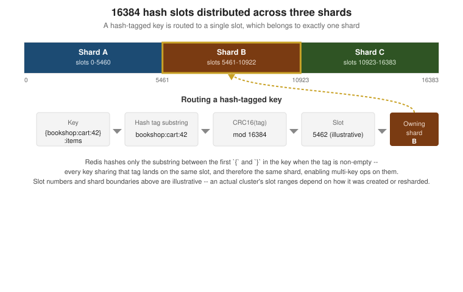

Replication, Sentinel & Cluster
|
This content was generated with the assistance of AI and should be verified against the official documentation before being relied on in production. |
Examples on this page target Redis Open Source 8.10 (8.10.2), with client examples against Jedis 8 and Lettuce 7.7. This page covers the three ways a Redis deployment stops being a single point of failure — plain master-replica replication, Sentinel-managed automatic failover on top of it, and Redis Cluster’s hash-slot sharding — and when to reach for which.
Replication
Every Redis replica is a full, continuously-updated copy of its master’s dataset, kept in sync over an ordinary Redis connection the replica opens to the master.
REPLICAOF and initial sync
REPLICAOF host port (the modern name for the deprecated SLAVEOF) makes the target instance a replica of
the given master; REPLICAOF NO ONE promotes it back to a standalone master without discarding its dataset.
Issuing REPLICAOF against a different host/port while already replicating discards the current dataset and
restarts sync against the new master from scratch.
127.0.0.1:6380> REPLICAOF 127.0.0.1 6379
OK
127.0.0.1:6380> REPLICAOF NO ONE
OKSee REPLICAOF.
Full vs. partial resync and the replication backlog
When a replica connects, the master and replica negotiate via PSYNC whether a partial or a full
resynchronization is possible:
-
Full resync — the master forks, writes an RDB snapshot of the whole dataset, and streams it to the replica; the replica discards whatever it had and loads the snapshot, then applies the write stream the master accumulated meanwhile. This is what happens on a replica’s very first connection, or after any gap the backlog below could not cover.
-
Partial resync — if the replica already holds a recent enough copy of the dataset (it reconnected after a brief network blip, for example) and presents a replication ID and offset the master can still satisfy from its replication backlog — a bounded, in-memory ring buffer of recent write commands (
repl-backlog-size, default 1MB) — the master replays only the missing commands instead of a whole snapshot. A gap larger than the backlog, or a replica presenting an unrecognized replication ID (for example after the master itself failed over), forces a full resync instead.
INFO replication reports master_repl_offset on the master and each replica’s own offset, the numbers a
partial resync compares to decide what is still coverable by the backlog.
127.0.0.1:6379> INFO replication
# Replication
role:master
connected_slaves:1
slave0:ip=127.0.0.1,port=6380,state=online,offset=9182734,lag=0
master_repl_offset:9182734See Redis replication.
min-replicas-to-write
By default a master accepts writes with any number of connected replicas, including zero — a lost replica
does not, by itself, block writes. min-replicas-to-write N (paired with min-replicas-max-lag seconds,
default 10) makes the master refuse writes once fewer than N replicas are connected and caught up within
the lag threshold, trading availability for a stronger guarantee that an accepted write has somewhere else to
survive a master crash. Neither setting makes Redis synchronous by default: replication itself stays
asynchronous, so a write can still be lost if the master crashes before it reached any replica; WAIT
numreplicas timeout is the per-command way to block until a specific write has actually propagated.
127.0.0.1:6379> CONFIG SET min-replicas-to-write 1
OK
127.0.0.1:6379> CONFIG SET min-replicas-max-lag 10
OKSee Redis replication.
Read-only replicas
replica-read-only yes (the default) makes a replica reject write commands from ordinary clients, since any
write it accepted locally would only be overwritten by the next command streamed from the master. Setting it
to no allows local writes on the replica, but they are never propagated anywhere and are silently lost on
the next full resync — a footgun almost never worth taking outside of a throwaway local write cache.
127.0.0.1:6380> CONFIG GET replica-read-only
1) "replica-read-only"
2) "yes"See Redis replication.
Diskless sync
By default (repl-diskless-sync yes) the master streams the RDB snapshot for a full resync directly over the
replica socket rather than writing it to disk first and letting the replica fetch the file — useful when disk
I/O, not network bandwidth, is the bottleneck, or when the master’s disk is slow or on network storage.
repl-diskless-sync-delay seconds (default 5) waits briefly before starting a diskless transfer so that
several replicas that reconnect close together can share one snapshot generation instead of forking once per
replica; repl-diskless-load similarly controls whether the replica streams the incoming snapshot straight
into memory instead of writing it to a temp file first.
127.0.0.1:6379> CONFIG GET repl-diskless-sync
1) "repl-diskless-sync"
2) "yes"See Redis replication.
Sentinel
Plain replication above gives you copies of the data, but promoting a replica when the master dies is manual. Sentinel is a separate, small Redis-like process that monitors a master/replica set and performs that promotion automatically.
Quorum and failover
Each Sentinel independently pings the master; once enough of them agree it is unreachable, they proceed to an
election and a failover. sentinel monitor mymaster host port quorum sets the master to watch and how many
Sentinels must agree the master is down before it is marked objectively down (ODOWN) — distinct from any
single Sentinel’s own subjectively down (SDOWN) opinion, which on its own triggers nothing. Reaching ODOWN
does not itself perform the failover: the Sentinels then hold a leader election (a majority of the configured
Sentinels, not just quorum, must agree on a leader) and only the elected leader Sentinel drives the actual
promotion. Because of that majority requirement, running Sentinel with fewer than three instances — or an
even count, which cannot break a tie — undermines the whole mechanism; three is the practical minimum.
$ redis-cli -p 26379 SENTINEL masters
$ redis-cli -p 26379 SENTINEL get-master-addr-by-name mymaster
1) "127.0.0.1"
2) "6379"sentinel.conf
A Sentinel process is started with its own config file rather than sharing the monitored Redis instance’s
redis.conf:
sentinel monitor mymaster 127.0.0.1 6379 2
sentinel down-after-milliseconds mymaster 5000
sentinel failover-timeout mymaster 60000
sentinel parallel-syncs mymaster 1down-after-milliseconds sets how long a master must be unreachable before this Sentinel marks it SDOWN;
failover-timeout bounds how long a failover attempt (including waiting for the promoted replica to be ready
and for the remaining replicas to be reconfigured) is allowed to take before Sentinel retries or gives up; and
parallel-syncs caps how many of the other replicas are reconfigured to follow the new master simultaneously,
trading failover speed against how much resync load the new master takes on at once. Sentinel rewrites this
file in place as the deployment’s state changes (a new master address after a failover, for example), so it
must be writable at runtime, not just at startup.
Client discovery
Neither Lettuce nor Jedis is told the master’s address directly in a Sentinel deployment — both are pointed at the Sentinels instead and ask them for the current master on every connection attempt:
-
Lettuce connects to
RedisURI.builder().withSentinel(host, port).withSentinelMasterId("mymaster").build()(repeating.withSentinel(…)for each known Sentinel). Lettuce resolves the current master throughSENTINEL get-master-addr-by-name, and, once connected, also opens a pub/sub connection to the Sentinels'+switch-masterchannel so it learns about a failover as soon as it happens rather than only on the next new connection. -
Jedis offers the analogous
JedisSentinelPool(masterName, sentinelHosts, …), which resolves the master the same way and likewise subscribes to+switch-masterto evict pooled connections to the old master once a failover completes.
Both clients need the set of Sentinel addresses, not a single one, since any individual Sentinel can be down when the client needs to look up the current master.
Split-brain risk
A network partition can leave the old master reachable by some clients (on its side of the partition) while
Sentinels on the other side promote a replica — briefly leaving two masters accepting writes from different
clients at once. min-replicas-to-write (above) narrows this window by making the old master refuse writes
once it can no longer see enough replicas, rather than continuing to accept writes it can never reconcile once
the partition heals; it does not eliminate the risk on its own, since a write can still land in the brief
window before the master notices its replicas are gone. Sentinel’s failover-timeout and quorum sizing are
the other lever — a low quorum against too few Sentinels is more prone to promoting prematurely on a partition
that would otherwise have healed.
See High availability with Redis
Sentinel and Redis replication
for min-replicas-to-write.
Cluster
Sentinel gives you failover but no sharding — every instance in the set still holds the whole dataset. Redis Cluster instead partitions the keyspace itself across multiple primaries (each optionally backed by its own replicas), so the dataset can grow beyond what a single node can hold, while still failing a primary over to one of its own replicas automatically.
Hash slots and CRC16
The keyspace is divided into 16384 fixed hash slots, and every key is deterministically mapped to exactly one:
CRC16(key) mod 16384. If a key contains a hash tag — a substring between the first \{ and the first
non-empty \} — only that substring is hashed instead of the whole key, so several related keys can be
pinned to the same slot on purpose (see "Multi-key command limits" below for why that matters). Every primary in the cluster owns a subset of the 16384 slots, and that assignment — not
node identity — is what determines which node a key belongs to.

Creating a cluster
redis-cli --cluster create bootstraps a cluster from a list of already-running, empty Redis instances
started with cluster-enabled yes, assigning slots evenly across the primaries and, with --cluster-replicas
N, attaching N replicas to each primary (placed on different nodes than their primary, where the node list
allows it):
$ redis-cli --cluster create \
127.0.0.1:7000 127.0.0.1:7001 127.0.0.1:7002 \
127.0.0.1:7003 127.0.0.1:7004 127.0.0.1:7005 \
--cluster-replicas 1
>>> Performing hash slots allocation on 6 nodes...
Can I set the above configuration? (type 'yes' to accept): yes
>>> Nodes configured to accept new cluster connectionsMOVED and ASK redirections
A client can connect to any cluster node and ask for any key; a node that does not own the requested key’s slot does not proxy the request, it redirects the client instead:
-
-MOVED slot host:portmeans the slot has permanently moved to that node — the client should update its whole cached slot-to-node map (typically by re-runningCLUSTER SHARDS), since aMOVEDon one slot usually means several slots were reassigned together, not just the one just queried. -
-ASK host:portis a one-time redirect issued only while a slot is mid-migration: the target key has already been moved to that node, but the slot as a whole has not, so the client should sendASKINGfollowed by only that one command to the target node, without updating its permanent slot map, since the next key in the same slot might still be on the original node.
Hash tags
Wrapping the part of a key that should determine its slot in \{ \} — for example \{bookshop:cart:42\} — lets every key that shares that tag land on the same slot regardless of the rest of the key name. This is how
the Bookshop cart, which stores a hash under bookshop:cart:<userId> but might also want a per-cart set or
stream alongside it (bookshop:cart:42:events, say), keeps every per-cart structure on one slot so they can
be read or written together in a single multi-key command or a Lua script.
127.0.0.1:6379> CLUSTER KEYSLOT bookshop:cart:42
(integer) 7365
127.0.0.1:6379> CLUSTER KEYSLOT {bookshop:cart:42}:events
(integer) 7365Multi-key command limits
MGET/MSET, a MULTI/EXEC transaction, and a Lua script’s key arguments must all resolve to the same
slot in Cluster mode — Redis has no cross-node coordination for a single command or transaction, so mixing
keys from different slots fails outright with a CROSSSLOT error rather than silently doing part of the work
on each node. This is the reason hash tags exist: any keys an application needs to touch together in one
command or transaction must be tagged onto the same slot deliberately, since Cluster mode gives that no other
way to happen.
127.0.0.1:6379> MGET bookshop:cart:42 bookshop:cart:43
(error) CROSSSLOT Keys in request don't hash to the same slot
127.0.0.1:6379> MGET {bookshop:cart:42}:items {bookshop:cart:42}:coupon
1) (nil)
2) (nil)Resharding and atomic slot migration
Resharding moves a range of slots (and the keys mapped to them) from one primary to another, needed both when
scaling a cluster out or in and when rebalancing load away from an overloaded shard. Before Redis 8.4, this
moved keys one at a time (CLUSTER SETSLOT slot IMPORTING\|MIGRATING, then CLUSTER GETKEYSINSLOT/MIGRATE
per batch, finalized with CLUSTER SETSLOT slot NODE), which was slow and, mid-migration, forced clients
through the ASK redirect dance above for every key that had not yet moved.
Redis 8.4 introduces atomic slot migration (ASM) via a new CLUSTER MIGRATION command: the destination node
issues CLUSTER MIGRATION IMPORT start-slot end-slot [start-slot end-slot …], which replicates the whole
slot range (an initial snapshot plus the live write stream, much like ordinary replication) to the destination
and only then performs a single atomic handoff of slot ownership — clients keep being served by the source
node throughout the copy and see, at most, an ordinary MOVED once ownership actually switches, instead of a
stream of ASK redirects for keys moved one by one. CLUSTER MIGRATION STATUS ID id\|ALL reports progress on
a running migration, and CLUSTER MIGRATION CANCEL ID id\|ALL (sent to the destination) aborts one.
redis-cli --cluster reshard/--cluster rebalance remain the operator-facing entry points and use ASM
automatically on a Redis 8.4+ cluster.
$ redis-cli --cluster reshard 127.0.0.1:7000 \
--cluster-from <source-node-id> --cluster-to <dest-node-id> \
--cluster-slots 1000 --cluster-yesCLUSTER SLOT-STATS
CLUSTER SLOT-STATS <SLOTSRANGE start-slot end-slot \| ORDERBY metric [LIMIT limit] [ASC\|DESC]> reports
per-slot usage on the current node — KEY-COUNT always, and, once cluster-slot-stats-enabled yes is set,
also CPU-USEC, NETWORK-BYTES-IN, NETWORK-BYTES-OUT and MEMORY-BYTES — the tool for spotting a hot or
cold slot before deciding what to reshard, rather than guessing from overall node-level metrics.
127.0.0.1:6379> CLUSTER SLOT-STATS ORDERBY key-count LIMIT 3 DESC
1) 1) (integer) 7365
2) 1) "key-count"
2) (integer) 184
127.0.0.1:6379> CLUSTER SLOT-STATS SLOTSRANGE 5461 10922See CLUSTER SLOT-STATS.
cluster-require-full-coverage
By default (cluster-require-full-coverage yes) a cluster stops serving any query the moment even a single
slot has no owner — typically while a primary and all its replicas are down at once — since Redis cannot
tell whether that slot’s data is truly gone or just temporarily unreachable, and refuses to guess. Setting it
to no lets the cluster keep serving the slots that are still covered, sacrificing full consistency guarantees
(queries for keys in the uncovered slots simply fail) for partial availability during an outage that would
otherwise take the whole cluster down.
127.0.0.1:6379> CONFIG SET cluster-require-full-coverage no
OKClient topology refresh
A cluster-aware client keeps its own cached map of slot-to-node ownership and updates it both reactively
(on a MOVED/ASK reply) and, usually, on a periodic timer — since a resharding operation can move slots
the client has not queried recently, and a reactive-only client would only discover that on the next miss.
Lettuce configures this explicitly through ClusterTopologyRefreshOptions, combining a periodic interval with
adaptive triggers that refresh immediately on events such as a MOVED redirect or a node becoming
unreachable (see the Lettuce example below); Jedis’s cluster client refreshes its slot cache reactively on
MOVED by default and, in recent versions, also supports a configurable periodic refresh.
Cluster vs. Sentinel vs. proxy (Redis Software)
| Topology | When to use it |
|---|---|
Plain replication (no Sentinel) |
A read-scaling setup, or a hot standby that a human (or an external orchestrator) promotes manually, without needing automatic failover. |
Sentinel |
The dataset fits on one primary, but the primary itself must not be a single point of failure — automatic failover, still a single logical keyspace, clients need a Sentinel-aware library. |
Redis Cluster |
The dataset (or its write/read throughput) has outgrown a single primary and needs to be sharded, with automatic per-shard failover built in; in exchange, clients need cluster-aware routing and multi-key operations are constrained to a single slot. |
Proxy (Redis Software) |
Same sharding and HA needs as Cluster, but without pushing slot-awareness into every client — Redis Software’s proxy tier presents a single endpoint and routes internally, at the cost of an extra network hop and being a commercial (not Redis Open Source) deployment model. |
Examples
A 3-primary/3-replica cluster with Docker Compose
A minimal sketch of six redis:8 containers wired for cluster mode — creating the cluster itself is still a
separate, one-off redis-cli --cluster create step against the running containers, not something Compose
expresses:
services:
redis-node-1:
image: redis:8
command: redis-server --port 7000 --cluster-enabled yes --cluster-config-file nodes-7000.conf
ports: ["7000:7000", "17000:17000"]
redis-node-2:
image: redis:8
command: redis-server --port 7001 --cluster-enabled yes --cluster-config-file nodes-7001.conf
ports: ["7001:7001", "17001:17001"]
redis-node-3:
image: redis:8
command: redis-server --port 7002 --cluster-enabled yes --cluster-config-file nodes-7002.conf
ports: ["7002:7002", "17002:17002"]
redis-node-4:
image: redis:8
command: redis-server --port 7003 --cluster-enabled yes --cluster-config-file nodes-7003.conf
ports: ["7003:7003", "17003:17003"]
redis-node-5:
image: redis:8
command: redis-server --port 7004 --cluster-enabled yes --cluster-config-file nodes-7004.conf
ports: ["7004:7004", "17004:17004"]
redis-node-6:
image: redis:8
command: redis-server --port 7005 --cluster-enabled yes --cluster-config-file nodes-7005.conf
ports: ["7005:7005", "17005:17005"]Each node’s cluster bus port (17000-17005, always the client port + 10000) also needs to be reachable
between the nodes themselves, not just from the host — omitted above for brevity but required in practice.
CLUSTER KEYSLOT
127.0.0.1:7000> CLUSTER KEYSLOT bookshop:cart:42
(integer) 7365
127.0.0.1:7000> CLUSTER KEYSLOT {bookshop:cart:42}:events
(integer) 7365This derives from CLUSTER KEYSLOT.
Lettuce RedisClusterClient with topology refresh
package com.example.bookshop;
import io.lettuce.core.cluster.ClusterClientOptions;
import io.lettuce.core.cluster.ClusterTopologyRefreshOptions;
import io.lettuce.core.cluster.RedisClusterClient;
import io.lettuce.core.cluster.api.StatefulRedisClusterConnection;
import java.time.Duration;
public class CartClusterClientFactory {
public StatefulRedisClusterConnection<String, String> connect() {
RedisClusterClient client = RedisClusterClient.create(
"redis://127.0.0.1:7000,redis://127.0.0.1:7001,redis://127.0.0.1:7002");
ClusterTopologyRefreshOptions topologyRefreshOptions = ClusterTopologyRefreshOptions.builder()
.enablePeriodicRefresh(Duration.ofSeconds(30))
.enableAllAdaptiveRefreshTriggers()
.build();
client.setOptions(ClusterClientOptions.builder()
.topologyRefreshOptions(topologyRefreshOptions)
.build());
return client.connect();
}
}Periodic refresh catches a resharding that happened without this client observing a MOVED/ASK reply;
adaptive triggers refresh immediately on events such as a redirect or a node disconnect, instead of waiting
for the next periodic tick. This derives from
Redis cluster specification.
Related pages
-
Architecture, Keyspace & Eviction — the single-threaded execution model, keyspace naming and expiration behaviour that replication and Cluster build on.